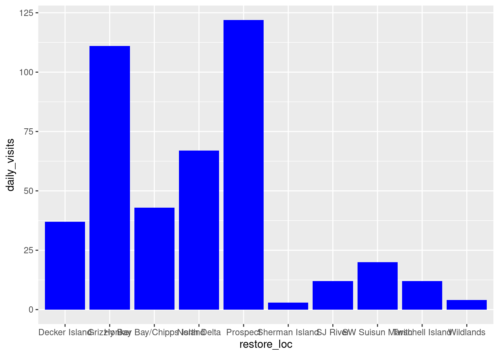
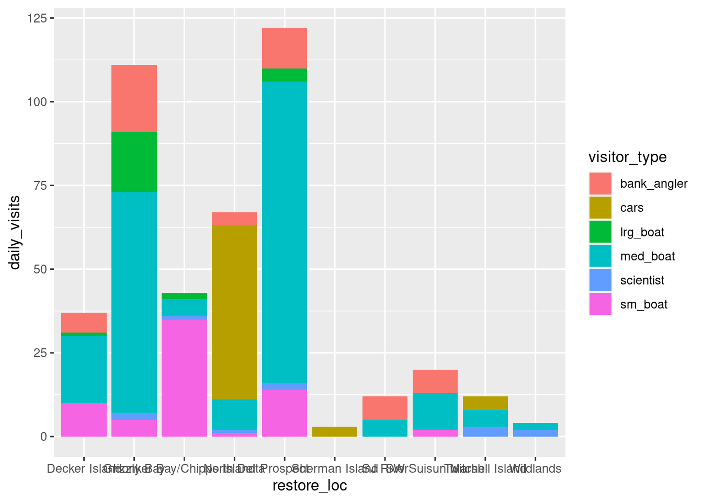
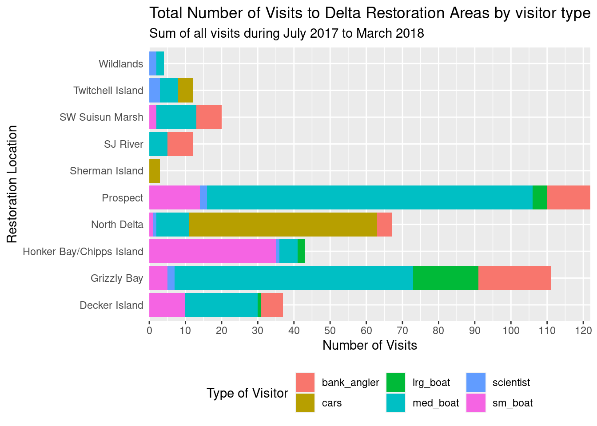
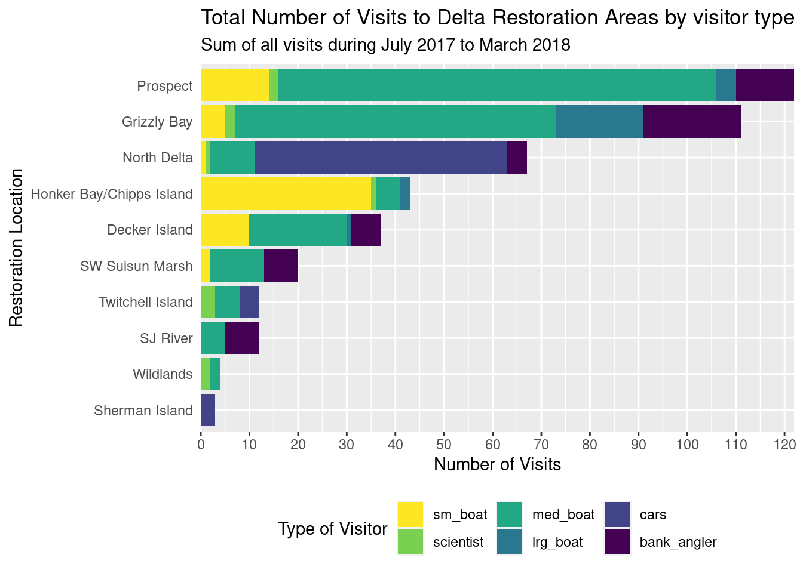

library(readr)
library(dplyr)
library(tidyr)
library(forcats) # makes working with factors easier
library(ggplot2)
library(leaflet) # interactive maps
library(DT) # interactive tables
library(scales) # scale functions for visualization
library(janitor) # expedite cleaning and exploring data
library(viridis) # colorblind friendly color paletteIntro to Data Visualization
Set Up
Read Data
delta_visits_raw <- read_csv("https://portal.edirepository.org/nis/dataviewer?packageid=edi.587.1&entityid=cda8c1384af0089b506d51ad8507641f")Data Exploration
colnames(delta_visits_raw)
glimpse(delta_visits_raw)
unique(delta_visits_raw$Date)Getting Data Ready For Visualization - Cleaning
delta_visits <- delta_visits_raw %>%
janitor::clean_names()
colnames(delta_visits) [1] "eco_restore_approximate_location" "reach"
[3] "latitude" "longitude"
[5] "date" "time_of_day"
[7] "sm_boat" "med_boat"
[9] "lrg_boat" "bank_angler"
[11] "scientist" "cars"
[13] "notes" Transforming Data from Wide to Long
visits_long <- delta_visits %>%
pivot_longer(cols = c(sm_boat, med_boat, lrg_boat, bank_angler, scientist, cars),
names_to = "visitor_type",
values_to = "quantity") %>%
rename(restore_loc = eco_restore_approximate_location) %>%
select(-notes)Calculate the daily visits to restoration locations
daily_visits_loc <- visits_long %>%
group_by(restore_loc, date, visitor_type) %>%
summarise(daily_visits = sum(quantity))`summarise()` has grouped output by 'restore_loc', 'date'. You can override
using the `.groups` argument.head(daily_visits_loc)# A tibble: 6 × 4
# Groups: restore_loc, date [1]
restore_loc date visitor_type daily_visits
<chr> <date> <chr> <dbl>
1 Decker Island 2017-07-07 bank_angler 4
2 Decker Island 2017-07-07 cars 0
3 Decker Island 2017-07-07 lrg_boat 0
4 Decker Island 2017-07-07 med_boat 6
5 Decker Island 2017-07-07 scientist 0
6 Decker Island 2017-07-07 sm_boat 0Plotting with ‘ggplot2’
ggplot(data = daily_visits_loc,
aes(x = restore_loc,
y = daily_visits))+
geom_col()
Customing out plot
ggplot(data = daily_visits_loc,
aes(x = restore_loc, y = daily_visits,
fill = visitor_type))+
geom_col(fill = 'blue')
Filling bars by visitor type
ggplot(data = daily_visits_loc,
aes(x = restore_loc, y = daily_visits,
fill = visitor_type))+
geom_col()
- use the ‘labs()’ to modify labels
- flip the x and y axis
- modify the theme
ggplot(data = daily_visits_loc,
aes(x = restore_loc, y = daily_visits,
fill = visitor_type))+
geom_col()+
labs(x = "Restoration Location",
y = "Number of Visits",
fill = "Type of Visitor",
title = "Total Number of Visits to Delta Restoration Areas by visitor type",
subtitle = "Sum of all visits during July 2017 to March 2018")+
coord_flip()+
theme_get()+
theme(legend.position = "bottom",
axis.ticks.y = element_blank())+
scale_y_continuous(breaks = seq(0, 120, 10),
expand = c(0, 0))
Reorder how the restoration locations are ordered
daily_visits_total <- daily_visits_loc %>%
group_by(restore_loc) %>%
mutate(n = sum(daily_visits)) %>%
ungroup()ggplot(data = daily_visits_total,
aes(x = fct_reorder(restore_loc, n),
y = daily_visits,
fill = visitor_type))+
geom_col()+
labs(x = "Restoration Location",
y = "Number of Visits",
fill = "Type of Visitor",
title = "Total Number of Visits to Delta Restoration Areas by visitor type",
subtitle = "Sum of all visits during July 2017 to March 2018")+
coord_flip()+
theme_get()+
theme(legend.position = "bottom",
axis.ticks.y = element_blank())+
scale_y_continuous(breaks = seq(0, 120, 10),
expand = c(0, 0))+
scale_fill_viridis_d()+
guides(fill = guide_legend(reverse=TRUE))
ggsave("Scripts/plots/visits_restore_sire_delts.jpg", width = 12, height = 6, units = "in")